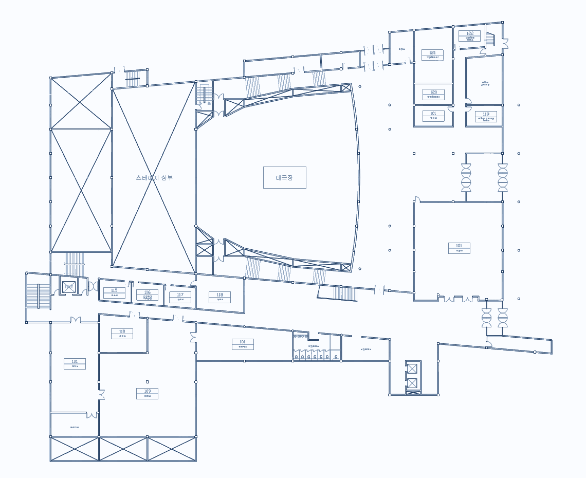

건물부터 강의실까지 한 번에 찾아요
수원대학교 · 건물 안내
건물을 확인하고, 실내로 이어가세요
건물 내부 층별 도면 및 강의실 안내로 전환할 수 있습니다.

동측 엘리베이터에 도착했습니다. 2층으로 이동한 뒤 아래 버튼을 누르면 2층 도면으로 스무스하게 전환되며 203호까지 남은 화살표를 보여줍니다.
📍 현재 위치가 [건물 층 호실]가 맞나요?
주변의 어느 위치에 계신가요?
사파리 브라우저에서 2단계로 홈 화면에 앱을 설치하세요
현재 계신 층수 버튼만 터치하면 GPS와 도면 인식을 통해 현위치(예: IT대학 308호 앞)를 출발점으로 하여 목적지(정문 등)까지 실내외 연속 최단 경로 안내를 즉시 시작합니다.
위성 신호를 받는 동안 잠시만 기다려 주세요 (최대 10초)